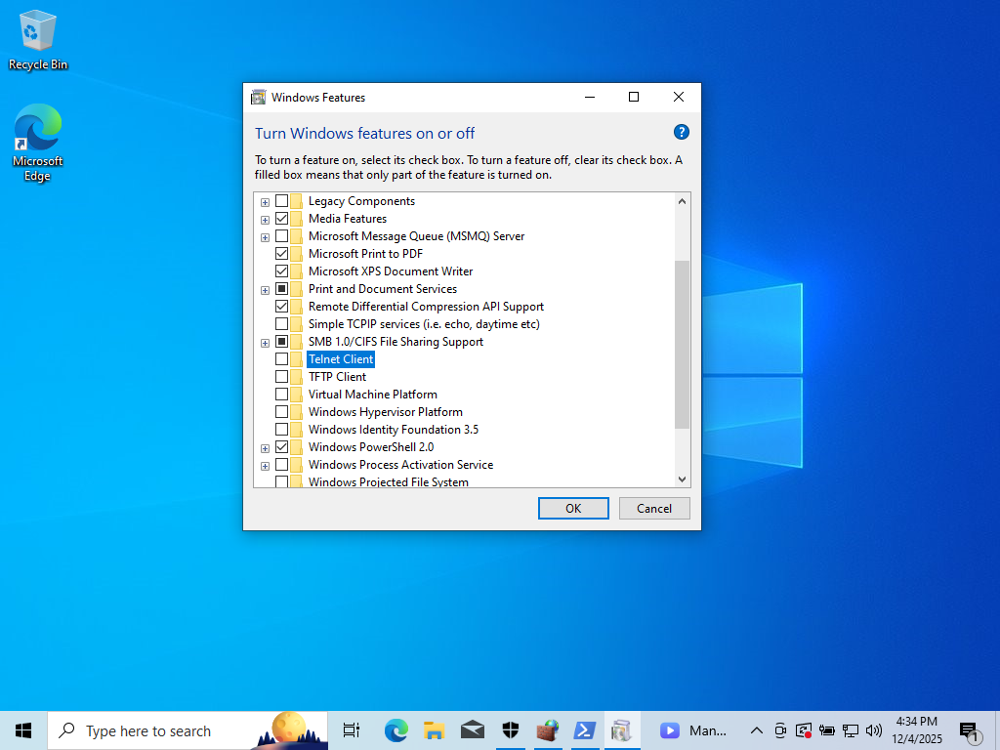

Virtualized Help Desk Environment Setup
The objective is to configure a client-side Type 2 Hypervisor using
VirtualBox and deploy two networked Virtual Machines — one Windows and one
Linux— to demonstrate core A+ skills, including virtualization, IP
configuration, and basic security hardening.
Install and configure the hypervisor
-
Download and install a hypervisor onto your host operating system. In
this case, we will use VirtualBox.
-
Verify that Hardware Assisted Virtualization is enabled in the host
computer's BIOS/UEFI settings. Without this, the VMs will run poorly or
not at all. A quick way to check is by opening Task Manager, going to
the Performance tab, choose CPU and check if Virtualization is enabled.
-
Download the ISO installation files for the two client operating
systems. In this case, we will be using Windows 10 and Ubuntu.
Create and install the Virtual Machines
-
Launch VirtualBox and create two new virtual machines. For each one, I
allocate at least 4GB of RAM and two CPU cores, and a sufficient virtual
hard disk size. For this case, I used 50GB.
-
Mount the respective ISO file to each VM's virtual optical drive and
power on the VM to begin the standard operating system installation
process.
-
After the OS is installed on each VM, install the hypervisor's "Guest
Additions". This is crucial as it installs necessary drivers for better
performance, screen resolution, and smooth integration with the host
machine.
Configure Network Settings
-
Next we set both VMs' network adapters to NAT (Network Address
Translation) network mode. In order to do this, we must create a network
in VirtualBox. Then go to each VM's network settings and attach them to
your created network. This allows both VMs to access the internet
through the host's IP address while remaining isolated from the rest of
my local area network.
-
While DHCP is standard, I will manually set a static IP address on both
VMs within the hypervisor's NAT network range. On both VMs, go to the
network settings and set the IP address, subnet mask, and a default
gateway.
-
Use the command prompt or Powershell in Windows and Terminal in Ubuntu
to execute the
ping command from one VM to the other to confirm direct internal
communication. You could also use ipconfig /all in Windows and
ip a in Ubuntu to verify the assigned IP addresses.
-
If there are any problems with pinging between machines, check your
firewall settings to make sure inbound echo requests are enabled.
System Hardening and Security
-
Immediately change the default usernames and passwords on both VMs to
strong, complex passwords.
-
Run system updates on both operating systems to ensure all security
patches are installed, minimizing vulnerabilities.
-
Verify that the firewalls are active on both VMs and configured to block
non-essential incoming traffic.
-
Identify and disable unnecessary services that could be exploited like
Telnet, if not required.
